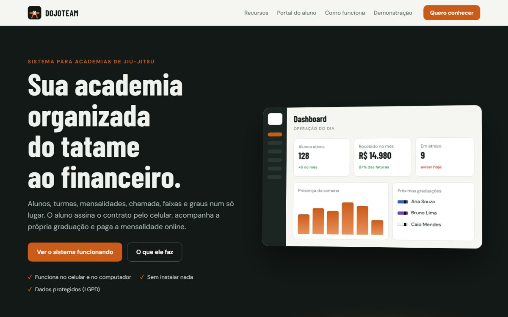
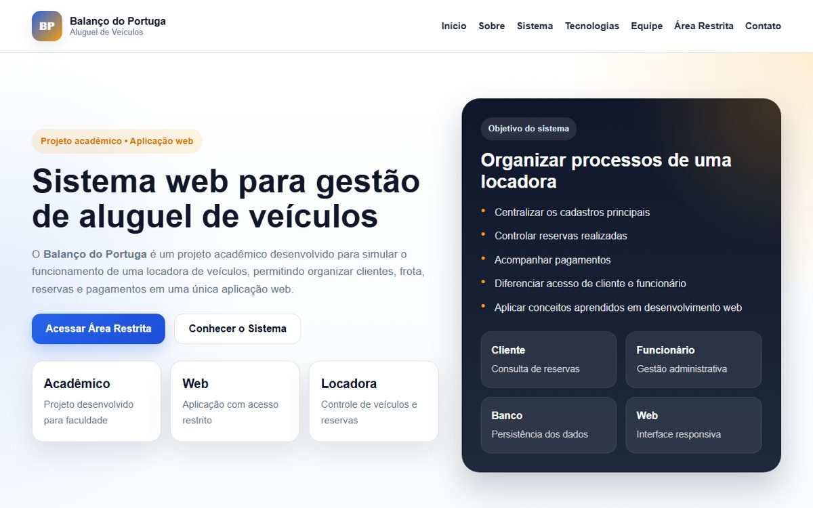
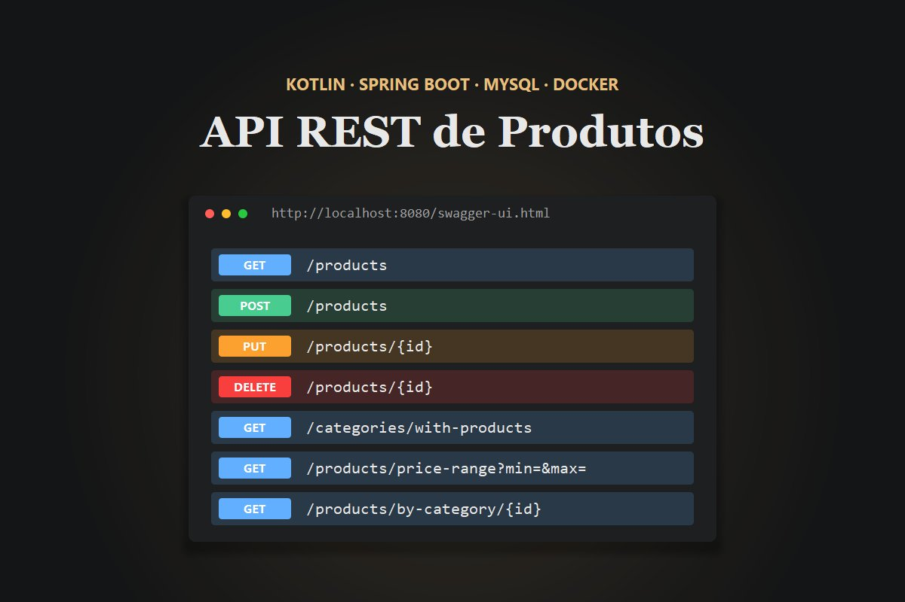
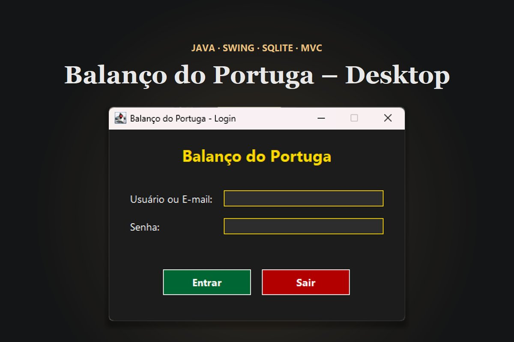

Sou o Gabriel,
desenvolvedor
Java full stack
em Salvador.
Sobre
Sou estudante de Análise e Desenvolvimento de Sistemas e desenvolvo aplicações web completas: do banco de dados e das APIs em Java e Spring Boot até a interface que o usuário vê. Antes da programação, trabalhei anos com telecomunicações e suporte técnico, o que me deu prática em resolver problemas reais e atenção a quem usa o sistema.
Baixar CurrículoTecnologias
- Java
- Spring Boot
- Kotlin
- Jakarta EE e JSF
- MySQL e SQLite
- HTML, CSS e JavaScript
- Git e Docker
Experiência
GS Page
Atualmente
Criação de sites institucionais, landing pages e soluções web responsivas. Desenvolvimento focado em design moderno, performance, experiência do usuário e presença digital para empresas e profissionais.
Cuida e Amor
Fev 2026 - Set 2026
Atuação na auditoria e validação de processos sistêmicos, análise de conformidade de dados, suporte aos usuários e treinamento de colaboradores. Participação na implantação de um novo sistema corporativo como usuário-chave (Usuário 0), realizando testes de homologação, validação de funcionalidades, identificação de melhorias e apoio na transição dos processos para o novo ambiente.
Freelancer
Jan 2023 - Dez 2025
Prestação de serviços de tecnologia envolvendo suporte técnico, manutenção de computadores, administração de bancos de dados e desenvolvimento web. Responsável pela criação e manutenção de sites, resolução de problemas em sistemas, implantação de soluções digitais e atendimento às necessidades tecnológicas de clientes, sempre buscando garantir desempenho, segurança e eficiência dos serviços prestados.
Formação
Análise e Desenvolvimento de Sistemas
2024 - Atual
Formação voltada para desenvolvimento de software, banco de dados, redes de computadores, análise de sistemas e tecnologias modernas para soluções digitais.
Cursos e Estudos Complementares
2023 - Atual
Estudos contínuos em HTML, CSS, JavaScript, Java, Kotlin, Spring Boot, MySQL, Git, GitHub, Docker, desenvolvimento web responsivo, APIs e boas práticas de programação.
Projetos
Sistemas que desenvolvi, a maioria com demonstração online para você testar.

DojoTeam
Sistema completo para academias de Jiu-Jitsu: alunos com contrato eletrônico, turmas e chamada, graduações (faixas e graus), mensalidades com multa por atraso, painel financeiro, usuários por cargo (admin, gerente, professor, recepção), auditoria e LGPD. O aluno tem um portal próprio para ver faturas, presenças e faixa e pagar online. A demonstração tem dados fictícios e os acessos de teste aparecem na tela de login.
- Java 17
- Spring Boot 3
- MySQL / TiDB
- HTML e JavaScript
- Docker
- Vercel + Render

Balanço do Portuga Web
Projeto acadêmico em equipe que simula a gestão de uma locadora de veículos: clientes, frota com fotos, reservas, pagamentos parciais, multas e histórico financeiro, com áreas separadas para funcionário e cliente e controle de acesso. Está publicado com dados de demonstração; os acessos de teste aparecem na tela de login.
- Java
- Jakarta Faces (JSF)
- PrimeFaces
- SQLite
- Docker + Payara

API de Produtos
API REST de produtos e categorias com CRUD completo e regras de negócio como busca por faixa de preço, produtos por categoria e categorias sem produtos. Documentada com Swagger e pronta para rodar com Docker Compose.
- Kotlin
- Spring Boot
- Spring Data JPA
- MySQL
- Swagger
- Docker

Balanço do Portuga Desktop
Primeira versão do sistema da locadora, como programa desktop: cadastro de clientes, veículos, reservas e pagamentos, com arquitetura MVC, validações de regras de negócio e banco SQLite local. Dá para baixar o programa pronto e rodar com Java 21.
- Java 21
- Swing
- MVC
- SQLite
Contato
Quer conversar sobre um projeto, uma vaga ou tirar uma dúvida? Me mande uma mensagem.